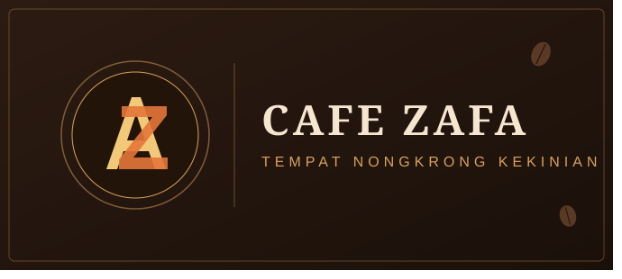

Selamat Datang Di Cafe Zafa
Cafe Zafa adalah tempat nongkrong nyaman dengan fasilitas lengkap: Wi-Fi kencang, colokan di setiap meja, AC sejuk, area outdoor, smoking area, musala, toilet bersih, dan parkir luas. Ditemani menu kopi racikan barista dan camilan pilihan, Cafe Zafa jadi tempat pas untuk kerja, kumpul bareng teman, atau sekadar bersantai.

Booking Meja Sekarang!
Tentang Cafe Zafa
Cafe Zafa adalah tempat nongkrong yang dibuat oleh dua owner yang pertama bernama Aziz dan Zachra, arti nama dari cafe ini adalah ZAFA (Zachra Fadilah), yang mana nama Fadilah adalah nama belakang dari Aziz. Mereka adalah sepasang kekasih yang sangat romantis. Kalau gak percaya lihat sendiri dah!
Selanjutnya Tentang Owner KamiFasilitas yang tersedia:
- FREE WI-FI
- LIVE MUSIC
- STOP KONTAK / CHARGER
- TOILET
- MUSHOLA